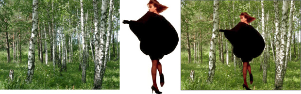
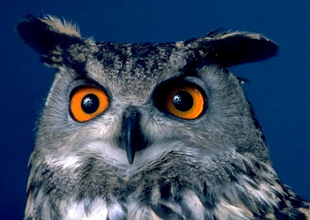
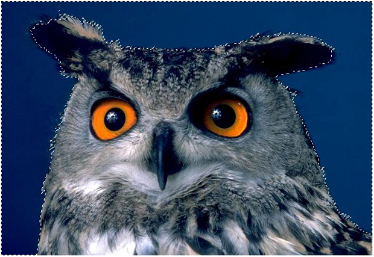
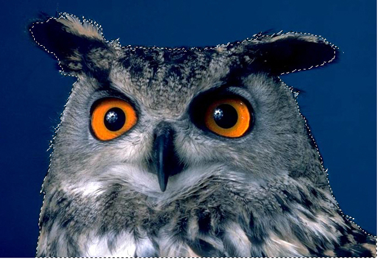
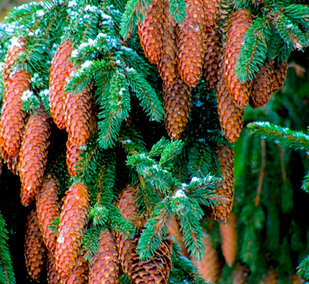
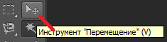
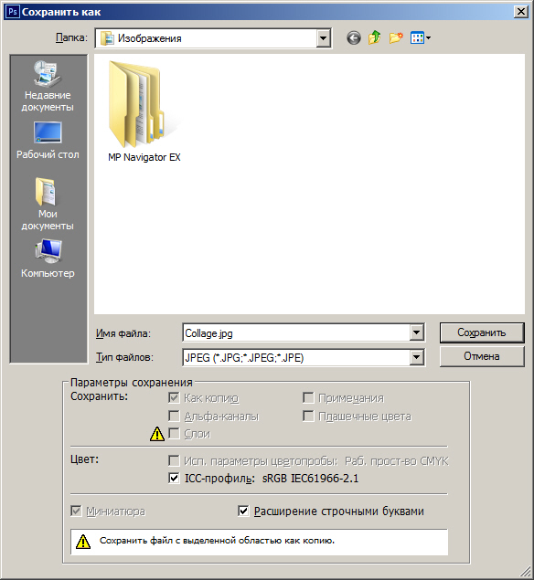
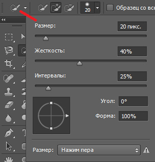
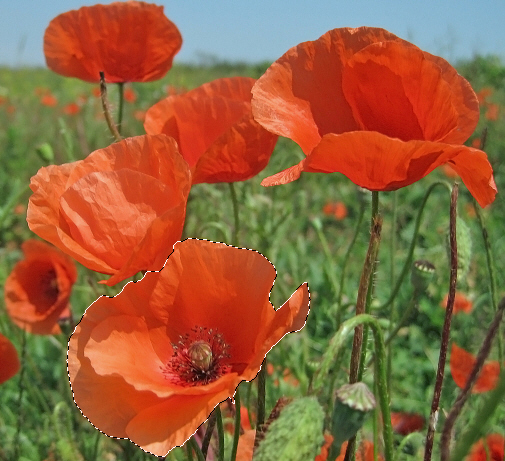
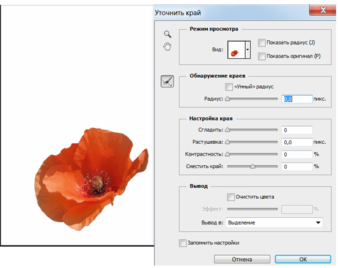

Лекция 5: Простой фотомонтаж (коллаж)
На этом занятии мы узнаем о двух новых инструментах - Волшебная палочка и Быстрое выделение. Инструмент Волшебная палочка позволяет производить выделение объектов, которые размещены на однородном фоне. Как пример, ниже показана фотография девушки на однородном (белом) фоне. Ее вырезали из фона инструментом Волшебная палочка и скопировали на новый фон. Получился простейший коллаж (фотомонтаж). По тому же принципу выполнен коллаж с картой - рис. 5.1.
Рис. 5.1. Пример элементарного коллажа, выполненного инструментом Волшебная палочка
Итак, инструмент Волшебная палочка обычно применяют, если объект выделения расположен на фоне одного цвета ( рис. 5.2). Давайте проделаем практическое упражнение, в котором наша задача - вырезать объект из однородного фона и поместить его на новый, неоднородный (сложный и многоцветный) фон. Посмотрим, как это делается.
Рис. 5.2. Исходное изображение птицы (совы) на однородном фоне синего цвета
Нажмите на палитре инструментов на кнопку Волшебная палочка. Переместите курсор на изображение фона вокруг совы и щелкните левой кнопкой мыши. Практически весь фон сразу попадает в выделенную инструментом область, поскольку содержит однородный синий цвет, резко контрастирующий с силуэтом самой совы ( рис. 5.3).
Совет
Если останется невыделенными несколько небольших фрагментов, то их можно добавить к основному выделению, удерживая клавишу Shift. При нажатии на Shift возле курсора появится небольшой значок (+), который указывает на то, что теперь выделяемые нами области будут суммироваться с предыдущими нашими выделениями, сливаясь с ними.
Рис. 5.3. Выделение фона произведено за один щелчок мыши
Выберите команду Выделение-Инверсия. Если результатом ваших предыдущих действий было выделение фона, то последней командой вы инвертируете выделение фона в выделение совы (операция инверсии меняет местами выделенные и не выделенные области) - рис. 5.4.
Рис. 5.4. Выделение фона поменялось на выделение совы
Выполните команду Редактирование-Скопировать. Изображение совы будет отделено от фона и скопировано в буфер обмена (clipboard). Откройте (или активизируйте, если оно уже открыто) изображение дерева (у нас это - ель) и выполните команду Редактирование-Вставить. В результате изображение совы будет помещено на новый слой, расположенный поверх фона. Фоном здесь будет выступать фотография дерева, на котором мы разместим сову ( рис. 5.5 и 5.6).
Рис. 5.5. Ель, на которую мы посадим сову
Рис. 5.6. Простой монтаж завершен
Если вы внимательно изучите монтаж, то заметите, что изображение птицы на дереве смещено в правый нижний угол и повернуто. Для перемещения вклеенного таким образом изображения используйте инструмент Перемещение (V) - рис. 5.7.
Рис. 5.7. Инструмент Перемещение
Для приведения масштаба птицы к масштабу дерева примените команду Редактирование-Трансформирование-Масштабирование. А командой Редактирование-Трансформирование-Поворот вы можете немного повернуть сову с помощью мышки (за угловой маркер). Нажмите на клавишу Enter для прекращения трансформации и закончите работу. Для завершения примера сохраните вашу работу на диск в файле Collage.jpg командой Файл-Сохранить Как ( рис. 5.8).
Рис. 5.8. Сохраняем нашу работу в папку Изображения
Инструмент Быстрое выделение
Инструмент Быстрое выделение расположен в одной группе с Волшебной палочкой, но в отличие от нее позволяет производить быстрое выделение объекта как на однородном, так и на неоднородном фоне.
Примечание
Не надо думать, что раз Быстрое выделение универсальнее, то этот инструмент лучше Волшебной палочки. У каждого из этих инструментов свои возможности и свои задачи.
Пользоваться этим инструментом очень просто. На панели свойств выбирается подходящий размер инструмента, соизмеримый с выделяемым объектом ( рис. 5.9).
Рис. 5.9. Часть панели свойств инструмента Быстрое выделение
Нажмите мышкой на выделяемом объекте, затем перейдите на соседний участок и так до тех пор, пока весь объект не будет выделен. Выделение получается не ручным, а полуавтоматическим - рис. 5.10.

Рис. 5.10. Выделение цветка из неоднородного фона инструментом Быстрое Выделение
Точность настройки границ выделения достигается использованием инструмента панели свойств Уточнить край - рис. 5.11.

Рис. 5.11. Окно настройки выделения командой Уточнить край